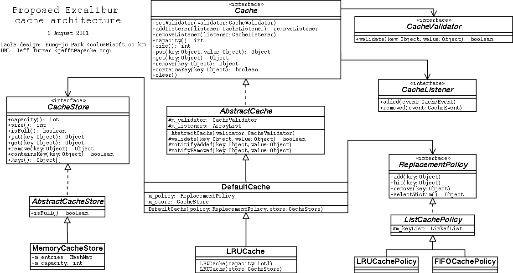

The org.apache.avalon.excalibur.cache package contains interfaces and classes
for caching. The design is sufficiently modular to allow for different implementations of the
backing mechanism (store) and replacement algorithm (eg LRU, FIFO).
Here is a class diagram: 